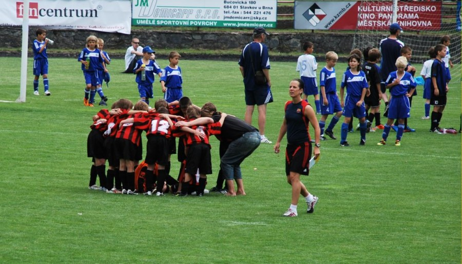

2011
Počátky projektu Žijeme hrou jsou spojené s fotbalovým klubem FC Boskovice, kde jsme se společně s FŠ Třebíč snažili o lepší pojetí fotbalu, ve kterém by například trenér „nezatěžoval“ hráče svými zkušenostmi, ale pomáhal jim objevit fotbal jejich vlastní cestou. Ve kterém by kvalitní sportovní výkony byly výsledkem hráčské chuti, nikoliv rodičovských ambicí nebo trenérského tlaku.
Už tehdy jsme také chtěli, aby byl fotbal přirozeně zapojený do širšího společenského dění, do rodin všech hráčů, kam sport podle nás patří. Ještě pod hlavičkou FC Boskovice jsme proto poprvé uspořádali mezinárodní fotbalový turnaj Boskovice dětem a rodinám. Turnaje se zúčastnilo 325 dětí ze 32 přihlášených mužstev, sehrálo se 112 zápasů a padlo 720 branek – podrobnosti si můžete přečíst na webu FC Boskovice.
2012
První ročník turnaje Boskovice dětem a rodinám skončil úspěchem, a tak není divu, že jsme ho o rok později zopakovali. I tentokrát se hrálo s velkou chutí, jak se můžete přesvědčit na videu:
„O víkendu 16.–17. června jsme se zúčastnili pravděpodobně nejlépe připraveného turnaje v této sezoně. Kromě Sparty se turnaje zúčastnila všechna nejlepší mužstva v republice, krom toho komplet slovenská špička doplněná Rapidem Vídeň a FC Budapešť,“ napsal jeden z účastníků turnaje, klub FC Bohemians 1905. Podrobnosti najdete na webu FC Boskovice.
2013
V pořadí třetí ročník boskovického fotbalového turnaje se odehrál v červnu 2013 a zúčastnilo se jej 24 týmů z České republiky, Slovenska a Rakouska. Na následujícím videu z turnaje si kromě tradičních záběrů dravých mladých fotbalistů můžete v závěru vyslechnout také rychlý rozhovor s Martinem Daňkem a Jirkou Vorlickým. V záběrech, které se do výsledného střihu bohužel nedostaly, oba naznačují, že by chtěli svůj přístup k trénování fotbalistů rozšířit na sport obecně, a možná nejen na sport. (Pokud vás zajímají podrobnosti o turnaji jako takovém, najdete je tradičně na FC Boskovice.)
V druhé půlce roku 2013 se projekt, o kterém Jirka s Martinem mluvili v turnajovém rozhovoru, konečně objevuje pod jménem Žijeme hrou. Loučíme se s „rodným“ klubem FC Boskovice, se kterým budeme nadále spolupracovat na pořádání boskovického turnaje, a přemýšlíme, kde a jak všude se naše hlavní téma, zážitkové učení, dá využít.
2014
V roce 2014 se projekt rozbíhá do mnoha směrů. Pracujeme na fotbalovém programu He-Art, pořádáme trenérské workshopy a turnaje, ale zároveň také uvádíme v Boskovicích divadelní hru Maria Kubce nazvanou Víkend s Bohem. Hledáme ideální výsledný tvar projektu, několikrát měníme podobu webu. A samozřejmě pořádáme tradiční fotbalový turnaj v Boskovicích:
Koncem roku 2014 se shodujeme na tom, že náš projekt může posloužit především jako společná platforma pro všechny, kteří se zajímají a v praxi prosazují zážitkové učení a koučování, ve sportu i kdekoliv jinde.